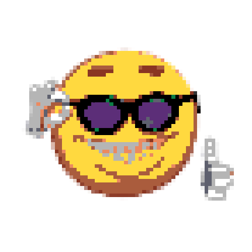

Shogan's
autistic
center



Shogan's
autistic
center
WIP/LOST PROJECTS

A story and arcade game based on FatalFireStudio "FapNightsAtFrennis". In this game, you play as Jack, an 18-year-old who gets kicked out by his parents and sets out to start a new life. After struggling to find work, you stumble upon an unusual job listing for a night guard at a place called YourLocalFrennis. Desperate and intrigued, you accept the job, only to find yourself in a bizarre setting with strange animatronics and a man with a phone for a head as your boss. As you begin this mysterious new role, you quickly realize that things are not as they seem.
Soulforge is the story of Armaros, a young boy who discovers he possesses a rare, ancient power. His life is turned upside down as he faces the challenge of uncovering his true potential and role in the world around him. Vepar, a mysterious figure, becomes his guide, helping him navigate his new reality. As Armaros struggles with his own weaknesses and external expectations, he becomes a key figure in the fight for the future of his world. The story blends mythical, fantastical, and introspective elements, exploring the nature of power, destiny, and inner transformation.
Lobster is a new communication app, created out of a need for change in a world dominated by Discord. It was born as a response to growing user frustration — tired of clunky interfaces, unnecessary features, and policies that increasingly ignore privacy and people’s real needs. Lobster is designed to be simple, lightweight, and instantly accessible — no account, no extra settings. Want to talk? Just join and start typing. It’s a space for those who value freedom, privacy, and the absence of corporate oversight in everyday communication.
Purifier is a new kind of energy drink – clean, refreshing, and made to break the norm. While most energy drinks lean into gritty, loud aesthetics, Purifier does the opposite. It's light, crisp, and focused on clarity — in taste, design, and effect. With a wide range of unique flavors and a price that's easy on the wallet, it's built for global reach without losing its core idea: energy should feel clean.
Synergy is a tale of friendship, loss, and the weight of choice. In a world that has never known magic, reality begins to collapse — rifts open, devouring people and places, leaving nothing behind. Vanos, a weary and broken teenager, along with a group of close friends, is dragged into a new reality filled with ruins, strange beings, and echoes of forgotten lives. Each of his companions loses their memory, and Vanos — torn between guilt and the will to protect them — must rebuild those bonds and remind them of who they truly are. Guiding him is Alloy — a soul that fuses with his body. At first, she appears as a caring guide, but her true intentions are darker: she craves vengeance, nudging Vanos toward violence. The story constantly teeters between tragedy and hope, and every choice opens different paths, shaping the outcome. It’s ultimately a story of whether one can preserve their identity when the world itself is consumed by darkness.

Synergy is a journey through a dying world where every choice carries weight, and battles are not just fought with weapons but with the essence of the soul; three companions wield their fate through unfolding cards that become living visions of attack or defense, while enemies strike back with storms of light and shadow the player must evade; the path moves ever forward through ruins, forgotten villages, collapsing castles and eerie corridors, with only rare side routes hiding secrets or strange figures; each soul burns with a different color — hope, wrath, regret, curiosity — shaping not only combat but the very dialogue that defines the story; in the end, the greatest enemy is not the monsters of this realm but another Vanos, a tyrant who refused death and hoarded the power of the original, forcing the player to confront not only the world but the reflection of what they themselves might become.
Eremphobia was a game that never came to life — envisioned as a haunting mix of Cry of Fear and the endless terror of the Backrooms. The player would step into the mind of Michael, a man broken by family struggles and mental illness, whose hallucinations twisted the world around him into grotesque monsters. His only desire was escape, chasing whispers from the dark web about a forbidden passage that led into the labyrinth where no one returns. Designed as a retro-styled PS1 horror, drenched in atmosphere, puzzles, and dread, it promised a descent into both psychological torment and otherworldly fear. But like its own collapsing corridors, the project fell apart under the weight of development troubles, leaving only fragments of what could have been.